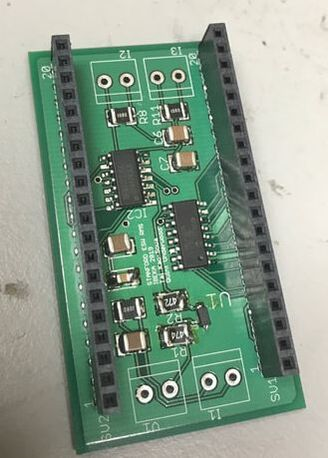

IBEKA RMS
Creating a remote monitoring system for microhydro generators. Check out our blog here.
We are members of Stanford Engineers for a Sustainable World. Our group is working on remote monitoring of micro-hydro systems. This is our fifth year working with IBEKA (People Centered Business and Economic Initiative) to design and implement a monitoring system for their small scale hydro power plants located all over Indonesia. We hope to monitor voltage, current, and frequency, and to make this data available to the public on an online database.
In past years we have designed and tested multiple iterations of remote monitoring devices. Past projects have focused on creating a data interface and on using the Momo to create a monitoring device. This year, we're adopting our Electron based system to a custom measurement PCB and two device system that communicates via LoRa radio.
During the summer of 2019, two team members traveled to Indonesia to install our prototype at hydro-power plants in Cinta Mekar and Kamanggih. The prototype is currently operational. Work for the 2019-2020 school year will focus on progressing from prototype to product by improving the accuracy, reliability, and scalability of the system.
